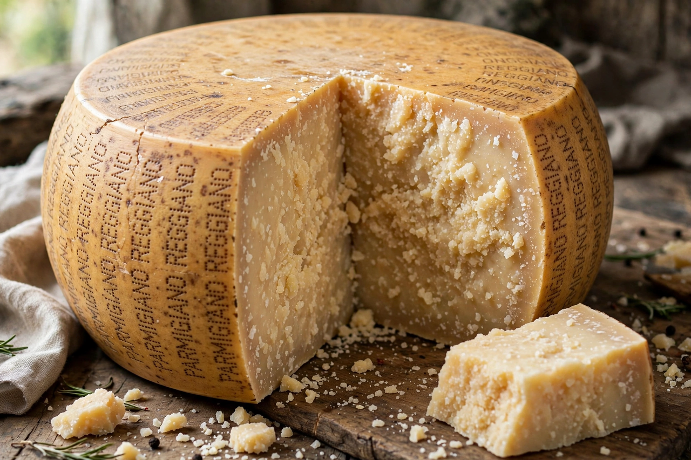

Parmesan
From Wikipedia, the free encyclopedia

Parmesan is the English name for Parmigiano Reggiano, a hard, granular Italian cheese made from cow's milk in a restricted region of Emilia-Romagna and Lombardy (around Parma, Reggio Emilia, Modena, Bologna and Mantua). It is one of Italy's most famous foods, protected by PDO status in Europe, and aged for a minimum of 12 months and commonly 24–36. Its rich, savoury, umami flavour and crystalline crunch make it a grating cheese par excellence, though it is also eaten in chunks.
Production
Parmigiano Reggiano is made from raw, partially skimmed cow's milk from two milkings, set with calf rennet in copper vats. The curd is cut to rice-grain size, cooked, formed into wheels of about 38–40 kg, brined for some three weeks, then aged on wooden shelves. Wheels are inspected — traditionally by hammer-tapping — and fire-branded if they pass. Only milk, salt and rennet are permitted, with a minimum of additives: none.
History and protection
The cheese's methods were refined by Benedictine and Cistercian monks from the Middle Ages; Boccaccio praised it in the Decameron in the 14th century. "Parmesan" is a protected term in the EU, but in the United States and some other countries it is used generically for similar hard grating cheeses, a long-standing trade dispute. Argentina and Australia also produce parmesan-style cheeses, some sold as "parmesano" or under brand names.
Uses
Parmesan is grated over pasta, risotto and soups, shaved into salads (as in Caesar salad), and baked into crisps (frico). Even the rind is used to flavour broths and minestrone. Its intensity comes from long ageing, which concentrates glutamates — the source of its deep umami character.